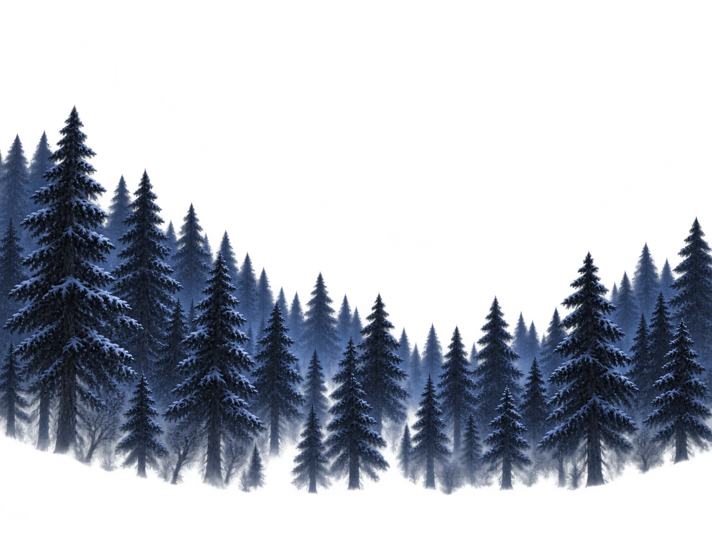

컨셉의 시작 구역

동굴 입구 배치 후보





사용자 변경 방향: 숲에서 오른쪽 바위 동굴로 진입. 고목 파일은 보존하고 현재 배치에서 제외했습니다.

고목 몸통·앞뿌리·고목 눈을 제외했습니다. 동굴 입구에는 어두운 내부 벽이 포함됩니다. 현재 암벽과 바닥은 구도 검토용 한 소재이며 최종 충돌 지형이 아닙니다.
컨셉 좌상단 640×480에서 인물 높이를 약 24~28px로 육안 추정 → 비교 목표 26px(화면 높이 5.42%). Run_00 실제 불투명 그림 높이 336px 기준으로 환산했습니다. 이전 시안은 같은 범위에서 약 74.3px로 약 2.86배 컸습니다. Unity Scale 확정값이 아닙니다.숲 바닥에서 입구로 이어지는 지형·눈 덮개, 동굴 내부 확장과 구역 연결은 아직 미제작입니다. 전체 맵 경로 변경 범위는 확정하지 않았습니다.